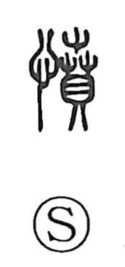

憤

Kun: ikidooru, ikidoori | On: fun
anger ・ indignation ・ resentment
Explanation
A phono-semantic character formed with the heart element to show emotion and the phonetic 賁 (fun). In ancient form, 賁 depicted flowers bursting open all at once, an image of inner power pressing outward. Applied to the heart, 憤 conveys anger that swells within and breaks forth—hence uses like ikidooru and ikidoori. In the Analects (VII.8) phrase 不憤不啓, 憤 names the inner arousal to seek truth: one does not open the way for a learner unless a genuine impulse rises from the heart.